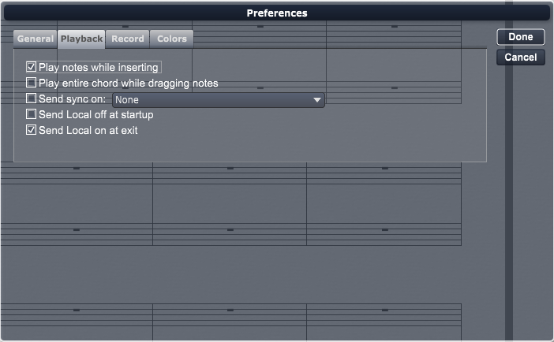

Use the check boxes to enable (check) or disabled (uncheck) various playback options. These playback options are discussed in the following sections.
Play Notes While Inserting/Dragging
Use this option to determine whether or not Overture sends MIDI data when inserting or dragging notes. You can choose to either check or uncheck this option:
Play Entire Chord While Dragging
Use this option to tell Overture whether to play just the note you are dragging or the entire chord that the note belongs to. You can choose either to check or to uncheck this option:
Send Sync On
Use this option to determine which device to send MIDI sync information to.
Send Local Off at Startup
Use this option to have Overture send MIDI Local off at startup.
Send Local On at Exit
Use this option to have Overture send MIDI Local on when exiting.